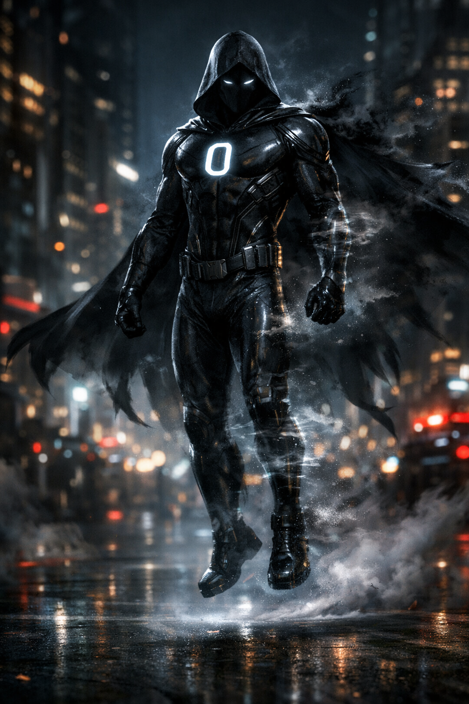

welcome the charecter who proofs that
Villans Are Not Born ,
They Are Made
The new charecter info

name:
ZERO
power:
more than expected
level:
Unknown
Family and Friends:
Unknown
more info:
Can Fly ,
Can be invesiablle , Fast
,UNKNOWN POWERS
click here to see more evil characters